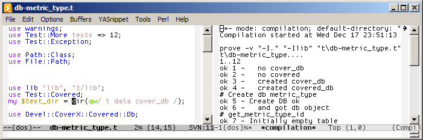
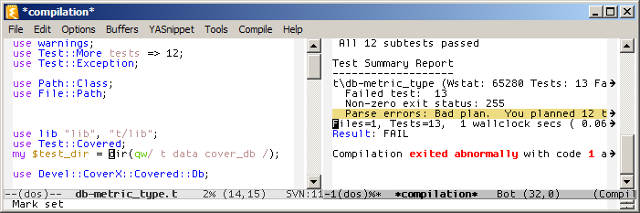
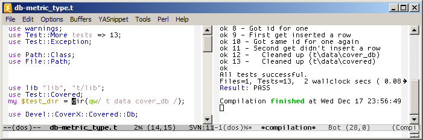

Brief walkthrough of how PerlySense can help you when writing tests.
I just added a new test and want to run the .t file (C-o C-r)...

...but it fails! The test count is wrong. There should be 13 tests, not 12.

Assist with Test Count -- C-o a t -- to synchronize the test count with the last test run, all without moving point.

Re-run the last .t file from any buffer with C-o r r... and all tests pass. Time to check in.